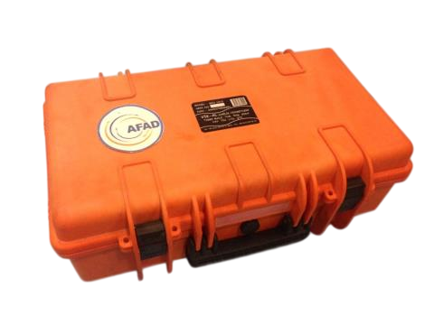
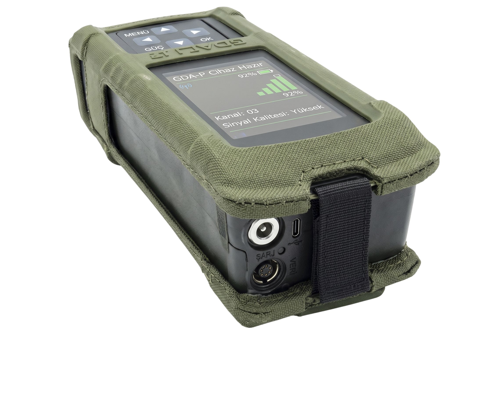
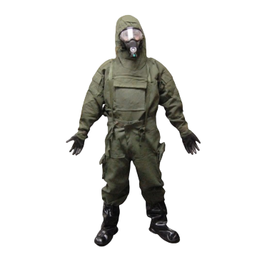
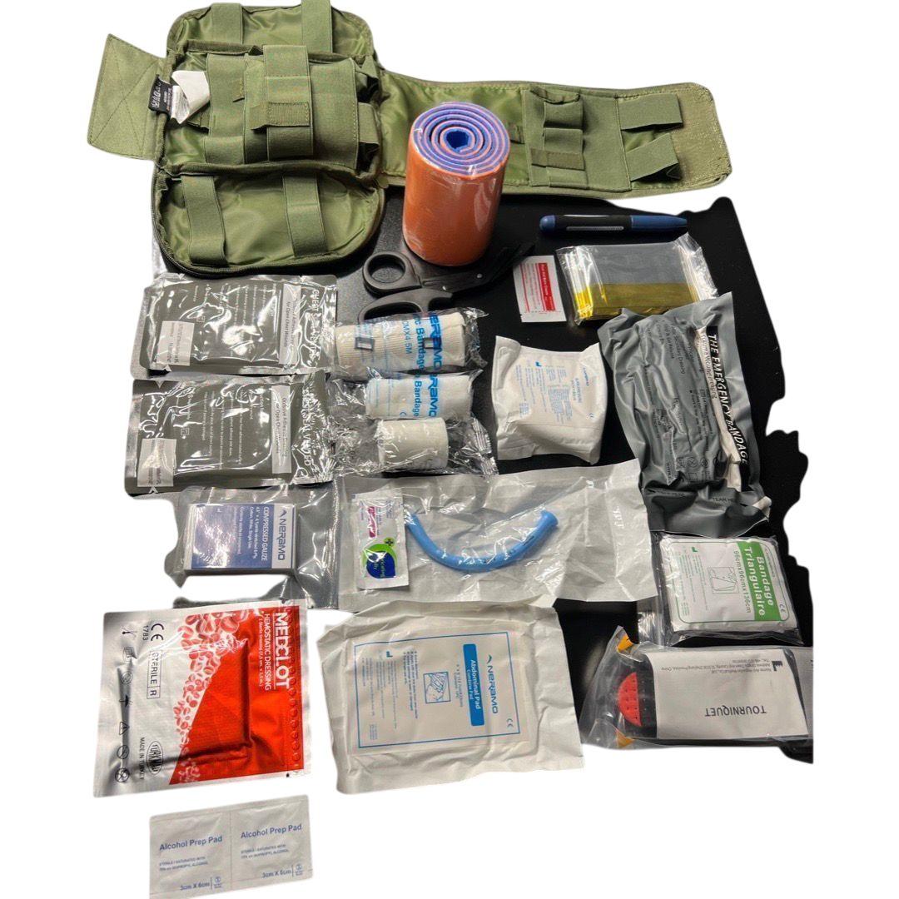
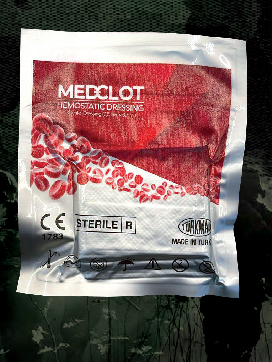

Biyolojik ve kimyasal harp maddesi tehdidi bulunan alanlarda hava, su, toprak, yüzey, materyal ve canlı/çevresel kaynaklardan numune almak ve güvenli taşıma zincirini kurmak için hazırlanmış taşınabilir hardcase kit.

AIRSENSE GDA-P; askeri ve sivil güvenlik operasyonlarında kimyasal savaş ajanları, toksik endüstriyel kimyasallar ve tehlikeli gazların kişisel ölçekte tespiti için geliştirilmiş taşınabilir dedektördür.

Dekontaminasyon, göz/nazal temizlik, koruyucu sarf ve ilk müdahale öğelerini tek IP65 çanta içinde toplayan saha seti.

KBRN tehdidi bulunan sahalarda personelin cilt, solunum ve ekipman temas risklerini azaltmaya yönelik koruyucu giyim ve iş elbise sistemleri.

VANGUARD IFAK; ağır kanama, yanık, hava yolu, yara kapatma, immobilizasyon ve hipotermi risklerine hızlı müdahale için hazırlanmış bireysel ilk yardım kitidir.

Ev, iş yeri, araç ve saha kullanımında temel yara bakımı, pansuman, koruma ve acil durum müdahaleleri için düzenlenmiş kompakt ilk yardım çantası.

Hızlı pıhtılaşma ve kanama kontrolü hedefiyle geliştirilen hemostatik formülasyonlar; toz, granül, emdirilmiş gazlı bez ve sprey gibi farklı uygulama formlarında çalışılabilir.